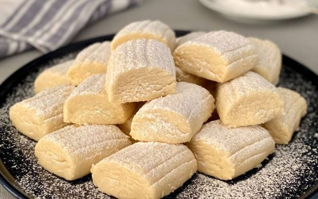

Un Kurabiyesi

Çayın kahvenin yanına olmazsa olmazı ağızda dağılan nefis bir kurabiye un kurabiyesi.
Kaç Kişilik:8 - 10 Kişilik
Hazırlama Süresi:20 Dakika
Pişirme Süresi:15 Dakika
Un Kurabiyesi Nasıl Yapılır ?
- Margarin yada tereyağı, sıvı yağ ve pudra şekerinin 1 su bardağını yoğuruyoruz. Kalan yarım bardaklık pudra şekeri üzeri için kullanılacak.
- 5 dk. yoğurduktan sonra nişasta ve unu ilave ediyoruz. İyice yoğuracağız çünkü hamur parçalanacaktır.
- Şekil verirken 2 adet ceviz büyüklüğünde bir parça koparıp rulo şekline getirin.
- Sağ, sol ve üst kısmına çatalla şekil verip yan yan kesin.
- Tepsiyi yağlamayın hamur zaten yağlı. Hazırladığınız kurabiyeleri tepsiye dizin.
- Önceden ısıtılmış fakat ılık olmalı 160 derecelik fırında 15 dk. pişirin.
- Fırından çıkarınca soğusun ve ayırdığımız yarım bardaklık pudra şekerine hepsini bulayın.
Afiyet olsun
Diğer Tariflere Göz At